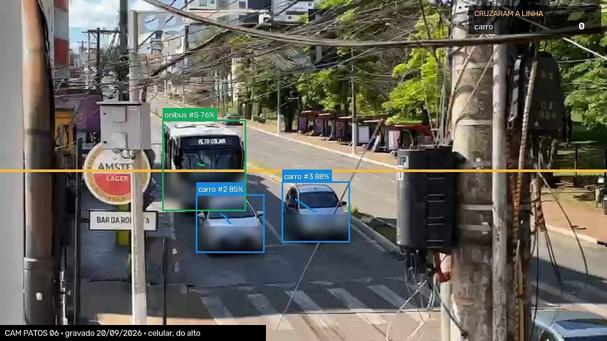
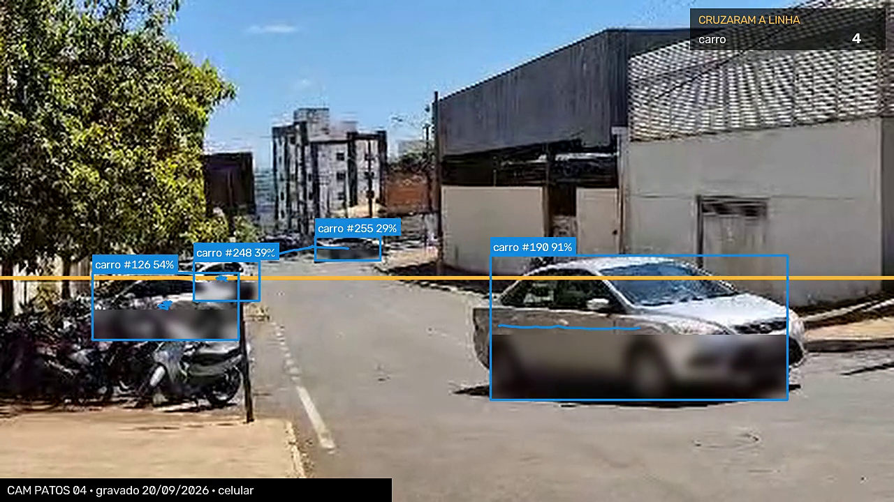

Vídeo que já existe entra. Evidência auditável sai.
FILTERDa imagem à evidência.
Piloto · Patos de MinasHackathon Cidades Inteligentes · 2026
01
O problema
A cidade já possui dados. Mas eles não contam uma história juntos.
Câmeras, semáforos, GPS, ônibus, Zona Azul e ocorrências produzem informação todos os dias — cada um no seu sistema. O gestor decide sem enxergar a cidade como um todo.
FILTERDa imagem à evidência.
Piloto · Patos de MinasHackathon Cidades Inteligentes · 2026
02
A pergunta
E se conectássemos o que a cidade já possui?
Dados integrados dão uma visão ampliada da mobilidade — sem trocar a infraestrutura que já existe.
FILTERDa imagem à evidência.
Piloto · Patos de MinasHackathon Cidades Inteligentes · 2026
03
A solução
Por isso criamos o FILTER.
Uma camada auditável de observabilidade da mobilidade.
Não substitui a infraestrutura que a cidade já tem: acrescenta processamento e prova sobre o vídeo existente.
O vídeo bruto fica na fonte sempre que a integração permitir.
O FILTER processa as janelas necessárias e persiste medidas, proveniência e estado de validação.
FILTERDa imagem à evidência.
Piloto · Patos de MinasHackathon Cidades Inteligentes · 2026
04
Como funciona
Do vídeo que já existe à evidência auditável.
O worker roda no mesmo ambiente ou o mais perto possível do VMS/NVR existente. Não exige tempo real nem outro acervo de vídeo. Processamos quadros temporariamente; persistimos medidas e proveniência.
FILTERDa imagem à evidência.
Piloto · Patos de MinasHackathon Cidades Inteligentes · 2026
05
Memória da mobilidade
O gestor passa a poder perguntar.
Onde os congestionamentos acontecem com mais frequência?
Em quais horários?
Esse problema se repete toda sexta-feira?
O que aconteceu depois de uma intervenção? Melhorou ou piorou?
O sistema começa a construir uma memória da mobilidade da cidade.
FILTERDa imagem à evidência.
Piloto · Patos de MinasHackathon Cidades Inteligentes · 2026
06
Camada de inteligência
A IA propõe. O gestor decide. O sistema mede depois.
1 · Identifica o padrão Um corredor com congestionamento recorrente às sextas, no horário de pico. EXEMPLO · DADO SINTÉTICO
2 · Sugere uma ação Apresenta os dados e propõe uma medida para análise. A decisão continua sendo do gestor.
3 · Compara antes e depois Mostra se a medida produziu resultado. Gestão reativa vira gestão baseada em evidência.
FILTERDa imagem à evidência.
Piloto · Patos de MinasHackathon Cidades Inteligentes · 2026
07
Já funciona — gravado hoje em Patos de Minas
A primeira fonte já está ligada: vídeo.

DADO REAL · MEDIDO 6 automóveis, 2 ônibus e 1 pedestre em 59 s — leitura da máquina, ainda não conferida à mão
DADO REAL · MEDIDO 4 automóveis, 1 moto e 1 pedestre em 42 s — uma pessoa contando à mão chegou a 4 carros e 1 moto

DADO REAL · MEDIDO 4 automóveis em 20 s
O fluxo padrão não faz OCR de placa nem reconhecimento facial e não persiste frames. O próximo benchmark é medir RTF, recursos e erro no ambiente real antes de dimensionar hardware ou preço.
FILTERDa imagem à evidência.
Piloto · Patos de MinasHackathon Cidades Inteligentes · 2026
08
Aonde queremos chegar
Do que enxergamos hoje ao que poderíamos compreender.
Mais fontes conectadas significam mais contexto, mais diagnóstico e mais capacidade de decisão.
Ilustração de meta. O "1%" é estimativa dita pela gestão de mobilidade em conversa com o time — não é medição nossa. O "50%" é objetivo, não resultado.
FILTERDa imagem à evidência.
Piloto · Patos de MinasHackathon Cidades Inteligentes · 2026
09
Evidência — dados abertos
O problema é real, e é concentrado.
~7
acidentes de trânsito por dia em Patos, de 2018 até hoje DADO REAL
22.708 sinistros ÷ ~3.160 dias · RENAEST, dado aberto federal, extração de 13/08/2026
3 em 10
têm moto envolvida DADO REAL
6.818 de 22.708 · RENAEST
4 em 10
acontecem em só 5 áreas de 1 km por 1 km DADO REAL
1.100 ocorrências com coordenada, 2025–início de 2026 · SEJUSP-MG (38–44% conforme o recorte)
FILTERDa imagem à evidência.
Piloto · Patos de MinasHackathon Cidades Inteligentes · 2026
10
Modelo · segurança · primeiro passo
Piloto em Patos de Minas. Depois, outras cidades.
Como se contrata 1 · Diagnóstico técnico da fonte 2 · Piloto de evidência em poucos pontos 3 · Operação conforme volume e SLA Preço só é fechado depois de medir integração, RTF, validação, segurança e suporte.
Seguro por desenho Processamento próximo da fonte. Sem OCR de placa nem reconhecimento facial por padrão. Cada medida registra origem e validação.
Feito sob medida Construído a partir do diagnóstico da própria cidade e das necessidades reais dos gestores. Validado, o modelo se adapta a outras cidades.
Primeiro dimensionamos sobre a infraestrutura existente; hardware novo e preço por câmera só entram se o inventário técnico provar necessidade.
FILTERDa imagem à evidência.
Piloto · Patos de MinasHackathon Cidades Inteligentes · 2026
11
Time
Enio · Osair · Rafael · Samuel · Luiz · GustavoDa imagem à evidência.